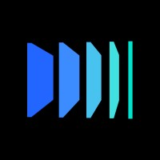
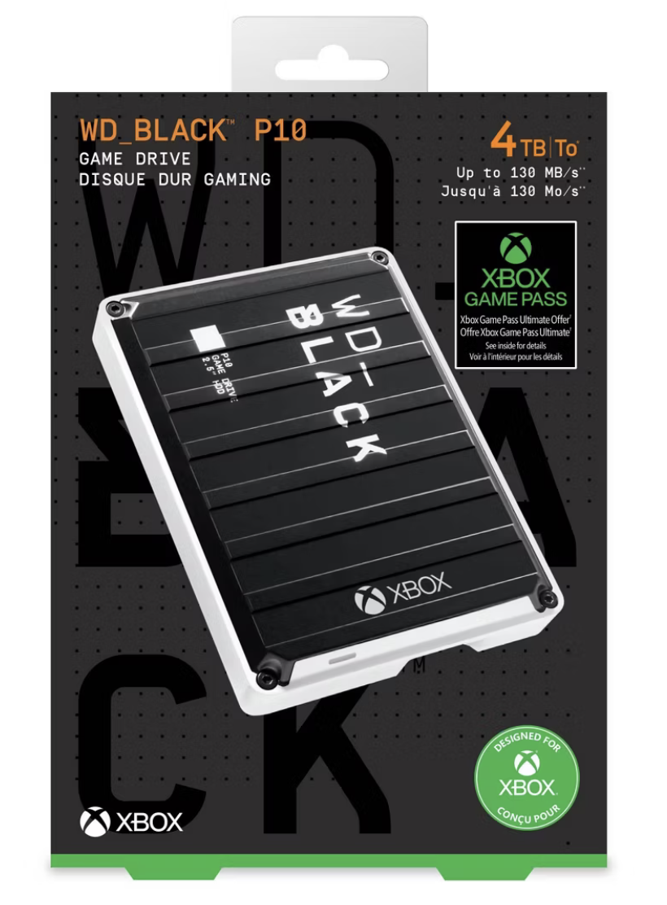
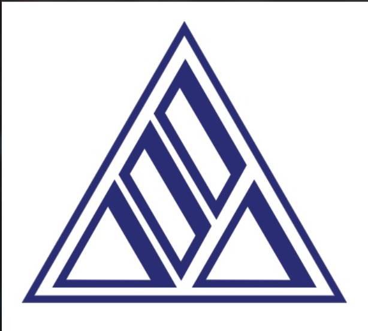
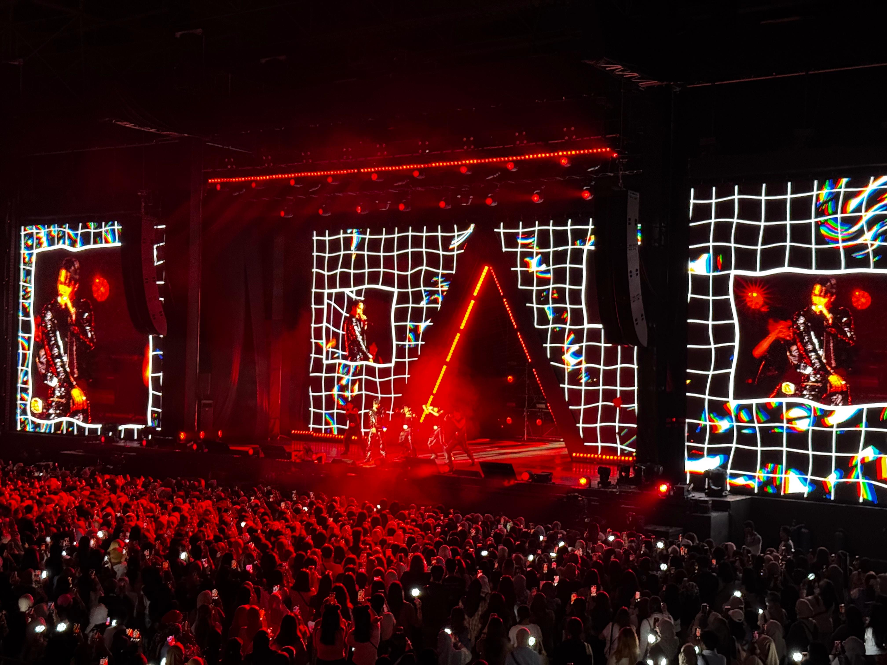
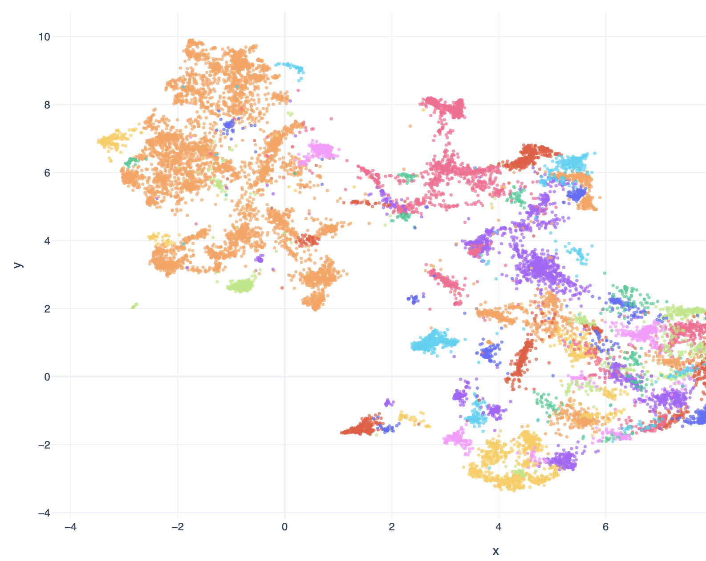
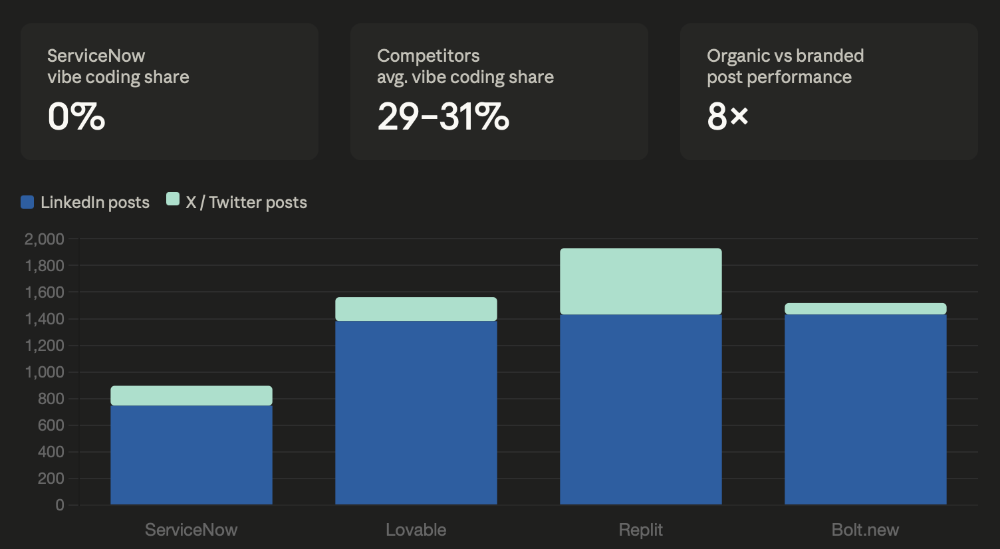
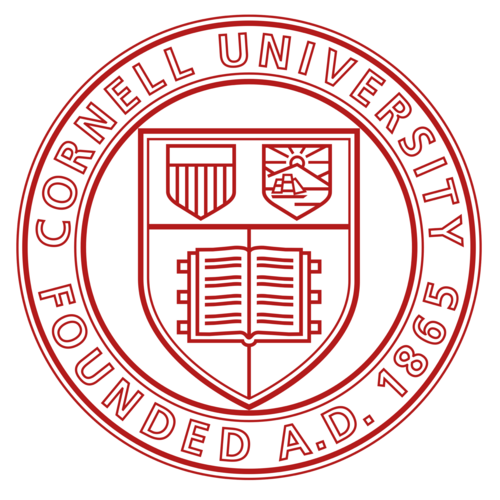

Product & Strategy — Michelle Karnadjaja
I ask why more than most people are comfortable with. That's where the interesting problems live.

Western Digital · Milpitas, CA65 engineers had built their entire working rhythm around a broken workflow. Nobody had named it as a problem yet. I did.


SIMA Agustus · Jakarta, IndonesiaSales were declining. Everyone assumed it was pricing. I mapped the customer journey and found the front door was leaking interested customers before price ever became a factor.

The brief was as open as it gets, propose what to build next, it needs product market fit. No scope, no playbook. I designed the entire research methodology from scratch.

Slower than expected adoption. The market assumed a product problem. Public data across 7,252 records showed a complete absence from the conversations that mattered.

Michelle Karnadjaja · Cornell MBA 2025–2027

I'm Michelle Karnadjaja, an engineer turned product and strategy thinker, currently doing my MBA at Cornell SC Johnson.
I've worked in firmware validation at Western Digital, built operations from scratch at a 65-year-old AV company in Jakarta, and defined product direction for an early-stage AI startup in San Francisco. Different industries, different scales, the same instinct running through all of it.
I walk into every system asking why it works that way. Not to challenge it — just because I actually want to know. That question has a way of leading somewhere interesting.
Open to PM and strategy roles, any industry, any scale.
Test runs at Western Digital could take anywhere from 5 minutes to 12 hours. Nobody knew when they'd finish. So engineers did what engineers do, they context-switched, checked back repeatedly, lost their train of thought, and accepted it as part of the job.
I did the same thing. Until I stopped and asked why.
There was no technical reason this had to be manual. The technology to solve it existed. So I asked around, and found something more interesting than a missing tool. Nobody was complaining. They'd just built their entire working rhythm around the uncertainty, context-switching, checking back, losing focus, without ever naming it as a problem worth solving. The workaround had become the workflow.
I built it for myself first. A lightweight Python notification tool that would alert me when a test completed, nothing more. If it didn't work for me, it wasn't worth proposing to anyone else.
It worked. So I brought it to a small pilot group and watched how they used it, what broke, what they actually needed versus what I assumed they needed. I iterated. I offered one-on-one setup help. I made it easy to adopt without disrupting anyone's existing workflow, important in an environment where projects ran on 2-year cycles and teams were resistant to mid-cycle changes.
When the results were clear, I brought it to the project lead. Not as a proposal, as a proof.
The team's hesitation wasn't irrational. A 2-year validation cycle creates real risk aversion, nobody wants to introduce instability into a process that's already running. So I didn't ask for permission to build it. I built it, proved it, and let the pilot results make the case. By the time I presented to the full 65-person team, the question wasn't whether to adopt it, it was why they hadn't had it sooner.
The tool wasn't complicated. What was complicated was seeing a problem that nobody had thought to name, and deciding it was worth naming.
SIMA Agustus has been building audiovisual and immersive experiences in Indonesia for 65 years. Clients include global names, BTS, Justin Bieber, Samsung, and installations ranging from Jakarta malls to the National Monument. The business was real. The craft was proven.
But sales were getting harder. Competitors were slashing prices and the assumption inside the company was clear: this is a pricing problem.
I wasn't so sure.
I came in with no AV industry background and no inherited assumptions about how things should work. So I mapped the entire system, from the moment a potential customer first encountered SIMA to the moment they received a quote.
What I found wasn't a pricing problem. It was a front door problem.
New customers interested enough to reach out were hitting a wall. The website was outdated and non-intuitive, it didn't reflect the caliber of work SIMA was actually delivering. Routing was broken, requests weren't reliably reaching the right internal teams. Some leads fell into a complete void, disappearing before anyone inside even knew they existed. The ones that survived had no structured follow-up process waiting for them.
65 years of "this is how we do it" had made all of it invisible to the people inside. To me it was obvious.
When I brought this to leadership the reception was open. Competitors were cheaper, but that was never SIMA's game. Premium product, proven quality, global clients. Price wasn't the lever. The real question was why interested customers weren't converting, and the answer had nothing to do with what things cost.
That reframe changed where we looked and what we built.
I redesigned the customer intake workflow end to end. I rebuilt the website to reflect SIMA's actual work, updated, intuitive, credible to a first-time visitor. I rebuilt the routing logic so every qualified inquiry reached the right internal team member. I closed the void. I created structure where there had been none.
Every decision came back to the same question: what does a new customer experience when they first try to reach us, and where do we lose them?
They thought the threat was outside, competitors with lower prices. The real gap was inside, a system that was losing interested customers before price ever became a factor.
Most product briefs come with constraints, a problem to solve, a user to serve, a direction to explore. The brief I got at AtlasPro AI was different.
Propose what to build next. It needs to have product market fit.
That was it. No prescribed method, no defined scope, no inherited research to build on. Just an early-stage AI startup in the location analytics space and an open question that the whole company's next move depended on.
I had no background in location or geospatial analytics. So before I could answer what to build, I had to understand the landscape well enough to ask the right questions.
I conducted a full industry and competitive analysis, mapping the market, the key players, the business models, the regulatory environment, the technology constraints, the user habits, and the broader ecosystem dynamics. I considered every angle before deciding where to look next.
The founder wanted to check if an outsider saw what she saw. I came back with points she hadn't encountered. That told us both the research was working.
It also told me the original scope was too broad. AtlasPro had been considering both location analytics and geospatial analytics as target markets. I proposed narrowing to geospatial analytics only, a more defensible, higher-signal opportunity. The founder agreed. Scope set.
With the landscape understood and scope narrowed, I designed a targeted research phase to get closer to real user frustration, not polished feedback, not competitor marketing claims, but what people actually say online when nobody's packaging it for them.
I determined the methodology myself. I identified 22 sources across 8 platform types, StackExchange, Reddit, GitHub, Discourse, Khoros, and others. I collected 27,915 posts, cleaned and deduplicated them to 26,982, and flagged 6,707 posts carrying frustration markers, 24.8% of the entire dataset. I ran NLP clustering and BERTopic topic modeling to surface 80+ topic clusters from the noise.
Every decision about what to collect, where to look, and how to interpret it was mine.
Raw clusters aren't a product strategy. I mapped every cluster onto a two-dimensional impact versus complexity framework and built an interactive visualization the founding team could navigate, not a static deck, but a live decision-making tool showing where the highest-leverage opportunities lived relative to the effort required to build them.
The founder could look at the map and see exactly which problems were worth solving first, grounded in real user signal rather than assumption.
The brief was open-ended by design, that's the hardest kind. No playbook, no senior PM to check with, no predefined scope to stay inside.
I designed the method, ran the research, challenged the scope, found what the insider had missed, and handed the founding team a map they could navigate by.
A major enterprise SaaS platform was seeing slower than expected adoption of its AI-native, low-code app building experience. The assumption in the market was that competing tools were winning on product.
The public data told a different story.
Across 7,252 records collected from LinkedIn, X/Twitter, and Reddit spanning four platforms, one finding stood out above everything else.
The enterprise platform had 0% share of the vibe coding conversation online. Three key competitors each sat at 29–31%. Not a small gap, a complete absence.
Meanwhile a keyword analysis of 746 LinkedIn posts showed the platform's most advanced AI feature at 2% of topic share versus Low Code at 21%. The most powerful capability in the product was barely being discussed, by anyone.
The gap wasn't product. It was awareness and positioning.
Organic practitioner posts averaged 8× more views than coordinated branded posts, 90 versus 11 average views. The platform's own voice was being outperformed by users talking about the product on their own terms.
The implication was clear: the adoption problem wasn't that the product wasn't good enough. It was that the people who needed to know about its most powerful capability didn't know it existed.
That reframe changed the entire strategic recommendation.